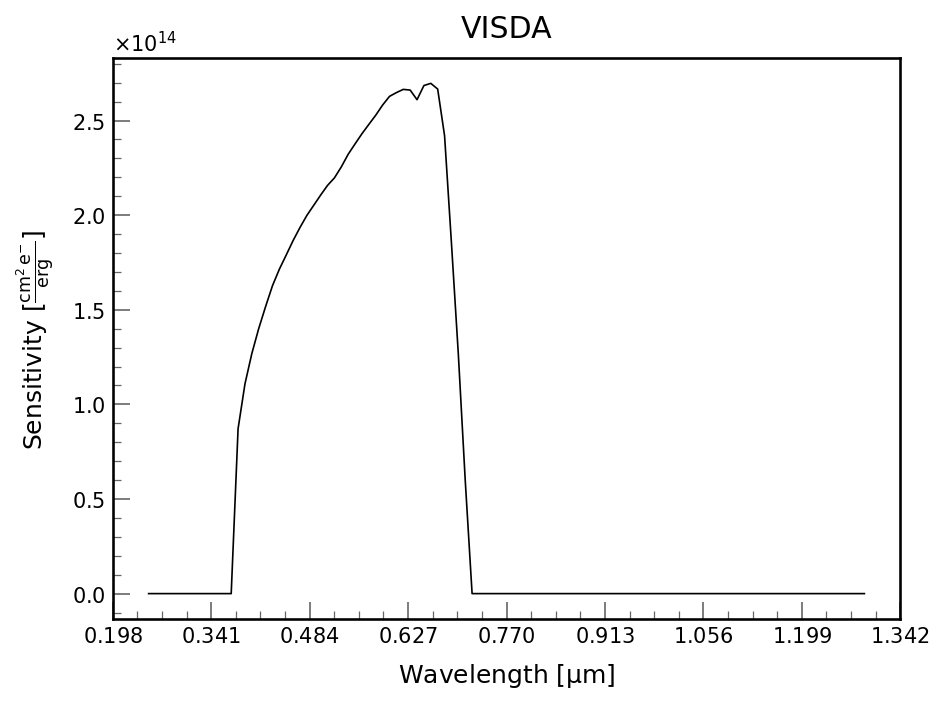

Documentation for VISDA
The VisibleDetector class shows you what to expect from the Visible side of Pandora. The key information on the detector is given below.

| VISDA | |
|---|---|
| Detector Size | (2048, 2048) |
| Pixel Scale | 0.78 \(\mathrm{\frac{{}^{\prime\prime}}{pix}}\) |
| Pixel Size | 6.5 \(\mathrm{\frac{\mu m}{pix}}\) |
| Read Noise | 1.5 \(\mathrm{\frac{e^{-}}{pix}}\) |
| Dark Noise | 1.0 \(\mathrm{\frac{e^{-}}{pix\,s}}\) |
| Bias | [[100. 100. 100. ... 100. 100. 100.] |
| [100. 100. 100. ... 100. 100. 100.] | |
| [100. 100. 100. ... 100. 100. 100.] | |
| ... | |
| [100. 100. 100. ... 100. 100. 100.] | |
| [100. 100. 100. ... 100. 100. 100.] | |
| [100. 100. 100. ... 100. 100. 100.]] \(\mathrm{DN}\) | |
| Wavelength Midpoint | 0.56 \(\mathrm{\mu m}\) |
| Integration Time | 0.2 \(\mathrm{s}\) |
| Zeropoint | 3.764e-09\(\mathrm{\frac{erg}{A\,s\,cm^{2}}}\) |
API Documentation for pandorasat.VisibleDetector
Bases: DetectorMixins
Holds information on the Pandora Visible Detector
background_rate
property
Detector background rate
bias
property
Gain
bits_per_pixel
property
Number of bits per pixel
dark
property
Dark Noise
fieldstop_radius
property
Radius of the fieldstop
gain
property
Gain
integration_time
property
Integration time
midpoint
property
Mid point of the sensitivity function
naxis1
property
WCS's are COLUMN major, so naxis1 is the number of columns
naxis2
property
WCS's are COLUMN major, so naxis2 is the number of rows
pixel_scale
property
Pixel scale of the detector
pixel_size
property
Size of a pixel
readnoise
property
Read Noise
shape
property
Shape of the detector in pixels
zeropoint
property
Calulate the zeropoint of the detector.
apply_gain(values)
Applies a single gain value
average_flux_density_to_mag(average_flux_density)
Convert average flux density to magnitude based on the zeropoint of the detector
estimate_zeropoint()
Calulate the zeropoint of the detector.
flux_to_mag(flux)
Convert flux to magnitude based on the zeropoint of the detector
get_wcs(ra, dec, theta=u.Quantity(0, unit='degree'), distortion=True)
Get the World Coordinate System for a detector as an astropy.wcs.WCS object, given pointing parameters. This method only updates the CRVAL and PC parameters, the rest of the WCS is set by reference products within this package.
Parameters:
target_ra: astropy.units.Quantity The target RA in degrees target_dec: astropy.units.Quantity The target Dec in degrees theta: astropy.units.Quantity The observatory angle in degrees
Returns:
wcs: astropy.wcs.WCS World Coordinate System object
mag_to_average_flux_density(mag)
Convert magnitude to average flux density based on the zeropoint of the detector
mag_to_flux(mag)
Convert magnitude to flux based on the zeropoint of the detector
plot_sensitivity(ax=None)
Plot the sensitivity of the detector as a function of wavelength
qe(wavelength)
Calculate the quantum efficiency of the detector.
Parameters
wavelength : npt.NDArray
Wavelength in microns as astropy.unit
Returns
qe : npt.NDArray Array of the quantum efficiency of the detector
sensitivity(wavelength)
Calulate the sensitivity of the detector.
Parameters
wavelength : npt.NDArray
Wavelength in microns as astropy.unit
Returns
sensitivity : npt.NDArray Array of the sensitivity of the detector
throughput(wavelength)
Calulate the throughput of the detector.
Parameters
wavelength : npt.NDArray
Wavelength in microns as astropy.unit
Returns
sensitivity : npt.NDArray Array of the throughput of the detector